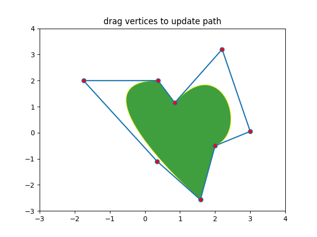

Note
Click here to download the full example code
12.3.10.1.23. Path editor¶
import numpy as np
import matplotlib
import matplotlib.path as mpath
import matplotlib.patches as mpatches
import matplotlib.pyplot as plt
Path = mpath.Path
fig, ax = plt.subplots()
pathdata = [
(Path.MOVETO, (1.58, -2.57)),
(Path.CURVE4, (0.35, -1.1)),
(Path.CURVE4, (-1.75, 2.0)),
(Path.CURVE4, (0.375, 2.0)),
(Path.LINETO, (0.85, 1.15)),
(Path.CURVE4, (2.2, 3.2)),
(Path.CURVE4, (3, 0.05)),
(Path.CURVE4, (2.0, -0.5)),
(Path.CLOSEPOLY, (1.58, -2.57)),
]
codes, verts = zip(*pathdata)
path = mpath.Path(verts, codes)
patch = mpatches.PathPatch(path, facecolor="green", edgecolor="yellow", alpha=0.5)
ax.add_patch(patch)
class PathInteractor:
showverts = True
epsilon = 5 # max pixel distance to count as a vertex hit
def __init__(self, pathpatch: matplotlib.patches.PathPatch):
"""Path editor class. ``t`` toggle vertex markers on and off.
When vertex markers are on, you can move them, delete them.
Args:
pathpatch (matplotlib.patches.PathPatch): PathPatch instance
"""
self.ax = pathpatch.axes
canvas = self.ax.figure.canvas
self.pathpatch = pathpatch
self.pathpatch.set_animated(True)
x, y = zip(*self.pathpatch.get_path().vertices)
(self.line,) = ax.plot(x, y, marker="o", markerfacecolor="r", animated=True)
self._ind = None # the active vert
canvas.mpl_connect("draw_event", self.draw_callback)
canvas.mpl_connect("button_press_event", self.button_press_callback)
canvas.mpl_connect("key_press_event", self.key_press_callback)
canvas.mpl_connect("button_release_event", self.button_release_callback)
canvas.mpl_connect("motion_notify_event", self.motion_notify_callback)
self.canvas = canvas
def draw_callback(self, event: matplotlib.backend_bases.DrawEvent):
self.background = self.canvas.copy_from_bbox(self.ax.bbox)
self.ax.draw_artist(self.pathpatch)
self.ax.draw_artist(self.line)
self.canvas.blit(self.ax.bbox)
def pathpatch_changed(self, pathpatch: matplotlib.patches.PathPatch):
"this method is called whenever the pathpatchgon object is called"
# only copy the artist props to the line (except visibility)
vis = self.line.get_visible()
plt.Artist.update_from(self.line, pathpatch)
self.line.set_visible(vis) # don't use the pathpatch visibility state
def get_ind_under_point(self, event):
"get the index of the vertex under point if within epsilon tolerance"
# display coords
xy = np.asarray(self.pathpatch.get_path().vertices)
xyt = self.pathpatch.get_transform().transform(xy)
xt, yt = xyt[:, 0], xyt[:, 1]
d = np.sqrt((xt - event.x) ** 2 + (yt - event.y) ** 2)
ind = d.argmin()
if d[ind] >= self.epsilon:
ind = None
return ind
def button_press_callback(self, event):
"whenever a mouse button is pressed"
if not self.showverts:
return
if event.inaxes is None:
return
if event.button != 1:
return
self._ind = self.get_ind_under_point(event)
def button_release_callback(self, event):
"whenever a mouse button is released"
if not self.showverts:
return
if event.button != 1:
return
self._ind = None
def key_press_callback(self, event):
"whenever a key is pressed"
if not event.inaxes:
return
if event.key == "t":
self.showverts = not self.showverts
self.line.set_visible(self.showverts)
if not self.showverts:
self._ind = None
self.canvas.draw()
def motion_notify_callback(self, event):
"on mouse movement"
if not self.showverts:
return
if self._ind is None:
return
if event.inaxes is None:
return
if event.button != 1:
return
x, y = event.xdata, event.ydata
vertices = self.pathpatch.get_path().vertices
vertices[self._ind] = x, y
self.line.set_data(zip(*vertices))
self.canvas.restore_region(self.background)
self.ax.draw_artist(self.pathpatch)
self.ax.draw_artist(self.line)
self.canvas.blit(self.ax.bbox)
interactor = PathInteractor(patch)
ax.set_title("drag vertices to update path")
ax.set_xlim(-3, 4)
ax.set_ylim(-3, 4)
plt.show()
Total running time of the script: ( 0 minutes 0.096 seconds)